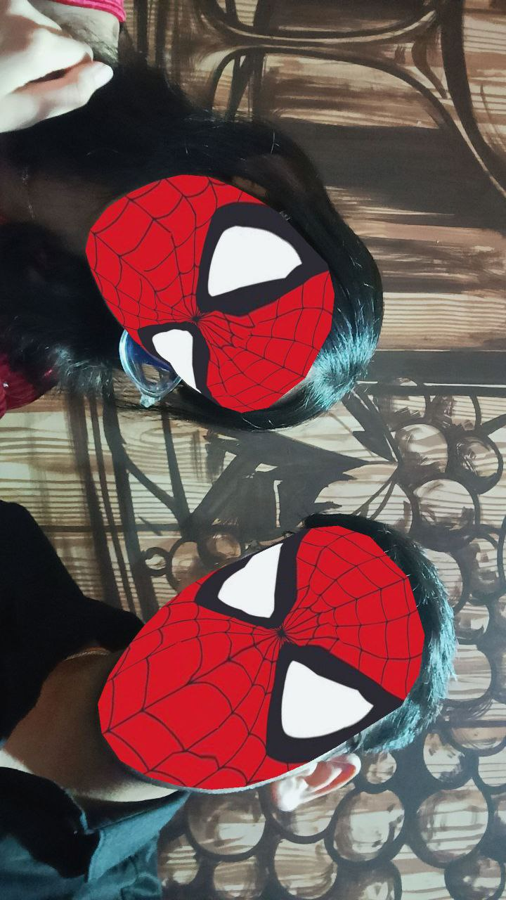

A Letter to My Heart
My darling, my moonshine miracle, my sunflower spirit—there are stars in the skies, yes, and waves that kiss far-off shores, but none like you, like the miracle walking this earth in thy name, like the light thou carry in those brown, yawning eyes. I know not what grief has fallen upon thy fair brow, nor what mists of melancholy have swept over the garden of thy spirit, but I feel it — deeply, intensely — as if were inscribed upon my own ribs. And though I may not know the cause, I know this: I am with you. Entirely. Eternally. Without falter or pause. Through every storm, through every quiet night, I am by thy side, a gentle hand in thine, a comforting arm about thy shoulders, a whisper in the stillness of midnight saying, over and over, “You are not alone.” You don’t have to tell me why you’re sad for me to give you my forever. I love you — more than any measure known to man or time. I love you with the devotion that breaks language, that pours from the heart like sunlight through stained glass and turns everything gold. I love you not in a cursory way but as a sort of cosmic force, embedded into the architecture of my soul. I stand behind you—not merely when your smile lights up the eyes and the laughter leaps forth from your body, but above all now, in this stillness, in this pain, in this perplexity. I am here for every tear that never falls, for every thought you can't muster the energy to describe, for every moment you simply need to be held in the quiet and reminded that someone loves you so hard, so deeply, it hurts to breathe. I understand things can seem knotted now, that life has intertwined strands too tightly to be unraveled, but my love, have faith this: all will be well. The world curves kindly to hearts like yours—warm, golden, gentle to excess—and this pain, whatever it is, it too will pass like a harsh gust yielding to spring. For in you there exists a grace that no shadow can extinguish, and a resilience so luminous that it might surpass dawn itself. You are not just lovely, my love—you are the loveliest creature to ever touch this planet. You are movement made into art, poetry shaped into form, perfection woven of moonlight and miracle. You are the sort of beauty gods would have cried over when they saw you pulled into existence. Your smile would cease conflicts. Your laughter would stifle the world. And even in your most silent grief, even in your stillness, you are still perfect—not the kind of perfection that insists on flawlessness, but the kind that is because of all the little things that make you who you are—your gentle eyes, your goofy jokes, your quiet wisdom, your passionate loyalty, the way you work to take care of everyone before yourself. I wish I could take your hurt and send it off into stardust. I wish I could capture your joy and pour it back into you when you forget how amazing you are. But until then, all I can do is be present here—with open arms, with the full heart of love that's overflowing for you into every aspect of my life. You mean the world to me, and I would brave any silence, ride any storm, and suffer any ache just to remind you that you are loved—deeply, madly, endlessly. So grip my hand tightly. Breathe alongside me. Let the night pass, and with the dawning of the morning, let hope be born again. You are the greatest thing that has ever occurred to me, and each morning I wake up thanking God that I get to love someone as amazing as you. Never in doubt. Never lose sight of how much you mean to me. You are my once-in-a-lifetime, my eternally-exalted muse, my flawless girl in an imperfect world. I am here, I love you, and I always will.
Our relationship is very special to me, i literally love you so much that I can't even express, soon we're complete 9 FUCKING MONTHS, It still seems like a dream and I still can't believe that it's real, This website building is a really difficult task but my love for you made it look effortless, I spent idk how many hours to build this simple website, It's my first time tho, still I'm not tired, NVM, So the thing is that I love you sm and I don't like seeing you sad, All I ever want is to make you smile and see you happy, No matter what it takes, Even if I've to sacrifice my happiness to see you smile, I could do it easily because I just want you to be happy and I'll try my best to make you happy...
Words of Love
"Love is composed of a single soul inhabiting two bodies." - Aristotle